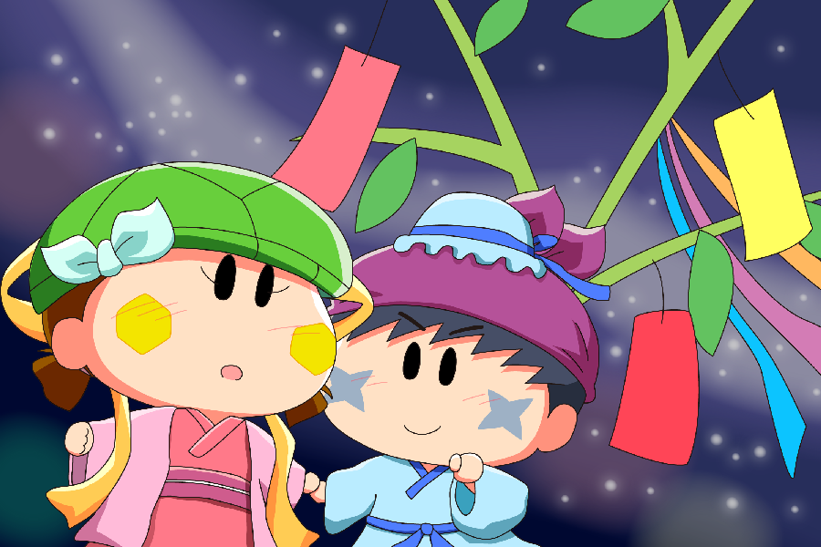

サスケ「今年はカメリに会えてオイラすごくうれしいんだぜ」
カメリ「うん～、今年も～会えないかと～思ってたから～、私もすごくうれしい～。
でも・・・」
カメリはサスケから目をそらし、下を向いた。
つられてサスケも不安な表情になる。
サスケ「カメリ？」
カメリ「また～サスケくんと～１年も会えなくなることを思うと～悲しくなるの～」
なあんだそんなことかと思ったサスケはホッとした表情に戻った。
そしてカメリの顔を覗き込み、笑顔を見せた。
サスケ「今はオイラと一緒だから、悲しいことは考えちゃだめだぜ」
カメリ「そうだね～、悲しいことは～考えないようにするね～」
そんなサスケの一言で、カメリの表情はぱあっと明るくなるのだった。
だいぶ遅れましたが、七夕絵を描きました。旧暦だと七夕は８月なので、ぎりぎりオンシーズンと言えなくもないですが(^^;。織姫のカメリと彦星のサスケになります。
描いている私も恥ずかしくなっちゃうくらいのリア充な二人ですね(^^)。私のイメージするサスケは相手の気持ちを理解することができる優しい男の子なので、サスカメを描くと毎回こんな風な絵になってしまいます。サスケの相手はカメリじゃなくても同じようなほのぼの絵になるような気もしますが。
そんな優しいサスケなので、サスケを好きな女の子を登場させてカメリを困らせてあげたくもなったりして。だけどサスケは「いい人」止まりで、あんまり女の子にモテない可能性もあるかも！？(^◇^;)
(2016/7/24)